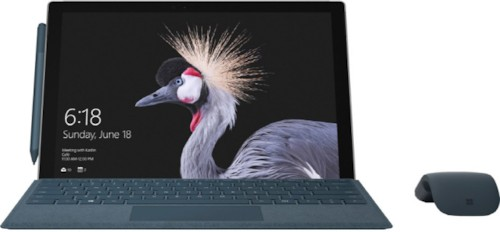

About 뉴 서피스 프로; 서피스 프로5
마이크로소프트가 2017년 5월 24일에 공개한 Windows 10 태블릿 컴퓨터. 서피스 프로 시리즈의 다섯번째 제품이다.
여태까지의 규칙을 따르면 "서피스 프로 5"가 되어야 할 기기지만, 마이크로소프트가 번호를 빼버렸다. 때문에 2013년 2월에 출시된 1세대 기기인 "서피스 태블릿 프로"(즉 윈도 8 버전)와 이름이 같기 때문에 살짝 혼동되기도 하지만, 이제 와서 4년전 기기와 헛갈릴 위험은 크지 않다고 마이크로소프트가 판단한 듯 하다. 그래도 확실히 하기 위해 "뉴 서피스 프로"나 "서피스 프로 2017"이라 부르는 이들이 많다. 마이크로소프트 센트럴 등의 웹사이트에서 기기용 펌웨어나 드라이버를 찾는 경우라면 "서피스 프로 윈도 10"으로 찾으면 쉽다.

위키백과로 이동